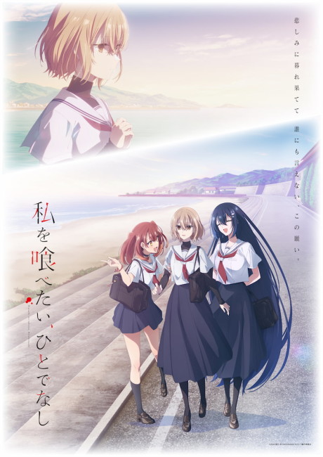
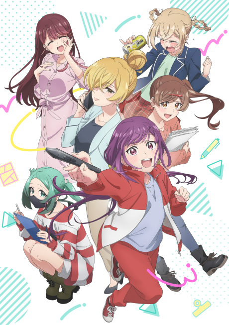
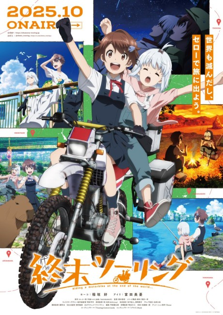
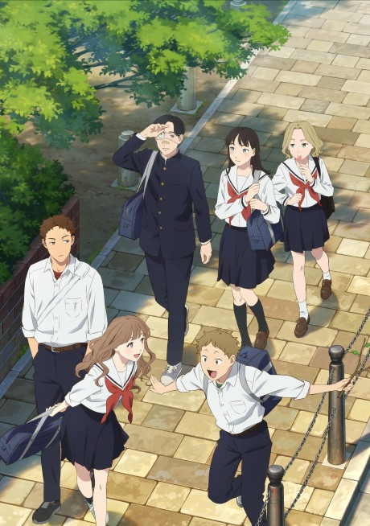
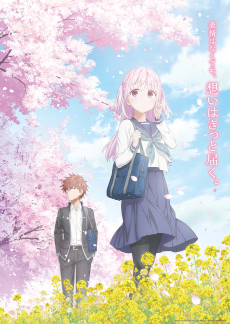
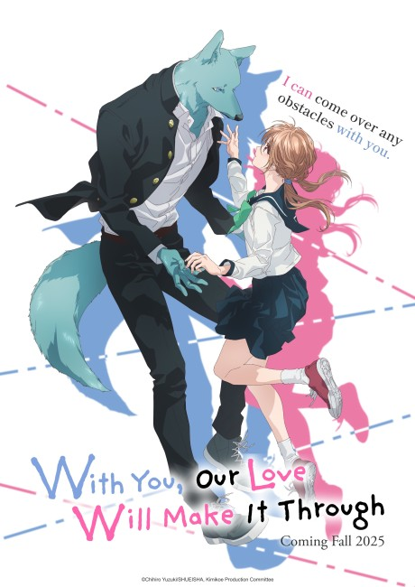
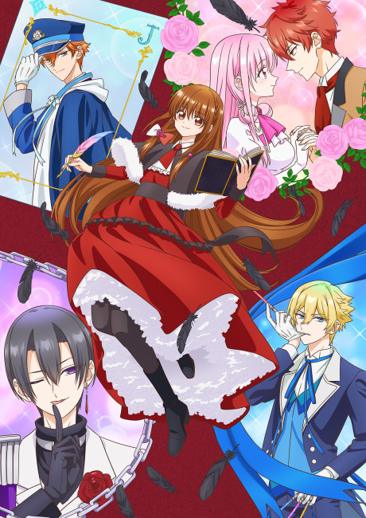
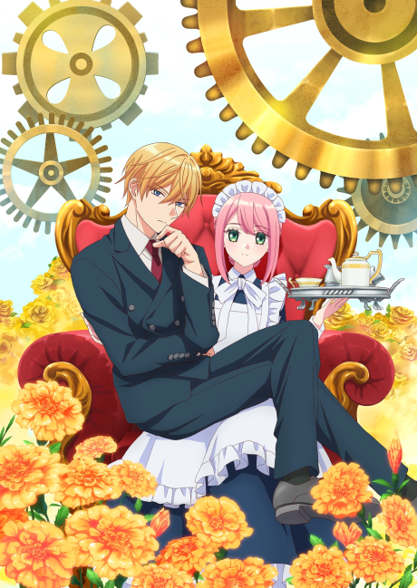
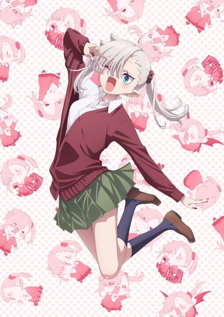
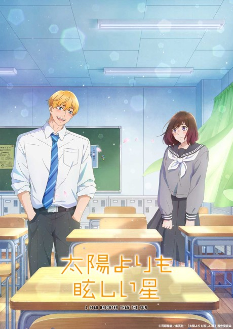

fuzzy's 2025 fall anime season primer
Dates are adjusted to CDT
get the "Youtube No Translation" firefox add-on to automatically disable AI dubs in PVs
stuff i'm looking forward to
- WataTabe: This Monster Wants to Eat Me
- Airing: October 2nd (Thursday)
- PV: https://youtu.be/sGCfgvjn4CU
- Studio: Studio Lings
- Why I'm looking forward to it: It's yuri!!!! has fairouz ai
- Alma-chan Wants to Be a Family
- Airing: October 5th (Sunday)
- PV:https://youtu.be/pw92VxHeBmc, https://youtu.be/PXecgOZ0o9o
- Studio: Studio Flad
- Why I'm looking forward to it: a child-rearing story featuring two mad scientists and a robot girl/ weapon of mass destruction!
- A Workplace Where You Can't Help But Smile/ A Mangaka's Weirdly Wonderful Workplace
- Airing: October 6th (Monday)
- PV: https://youtu.be/B3oDeY86E9Q
- Studio: Voil
- Why I'm looking forward to it: a really fun and cute comedy that also gives a little insight into how manga is made
- Shuumatsu Touring/Touring After the Apocalypse
- Airing: October 4th (Saturday)
- PV: https://youtu.be/-dC7gzY9pa4
- Studio: Nexus
- Why I'm looking forward to it: An slice of life at the end of the world! It's very cute and very poignant! Features a cute little robot girl!
- Yano-kun's Ordinary Days
- Airing: September 30th (Tuesday)
- PV: https://youtu.be/m1CHIKyqVCE
- Studio: Ajiado
- Why I'm looking forward to it: I like these kinds of cute romcoms. pure love... warms my cold heart... i like the character designs and the art is really cute!
- Expressionless Face Girl & Emotional Face Boy
- Airing: October 4th (Saturday)
- PV: https://youtu.be/f4gkeOeiQTQ
- Studio: STUDIO POLON
- Why I'm looking forward to it: cute gag romcom! the way her feelings are expressed is so cute...






stuff i'm skeptical of
- With You, Our Love Will Make It Through
- Airing: October 14th (Tuesday)
- PV: https://youtu.be/9asZ1Y37YUs, https://youtu.be/NmmfDtxCWeQ
- Studio: Millepensee
- Why I'm looking forward to it: nothing wrong with a little beastiality desu
- The Dark History of the Reincarnated Villainess
- Airing: October 9th (Thursday)
- PV: https://youtu.be/1b0qYen6jUU
- Studio: Studio DEEN
- Why I'm looking forward to it: i like the premise of a girl reincarnating into her own cringey story and her reactions in the pv are funny
- Mechanical Marie
- Airing: October 5th (Sunday)
- PV: https://youtu.be/ai2lFZTq9d0
- Studio: Zero-G, Liber
- Why I'm looking forward to it: what the hell she's not even a real robot what the fuck
- Dusk Beyond the End of the World
- Airing: September 25th (Thursday)
- PV: https://youtu.be/3Ehx2W5c0jk
- Studio: P.A.WORKS
- Why I'm looking forward to it: I want a powerful robot girl to propose to me
- Vampire-Chan Can't Suck Properly
- Airing: October 12th (Sunday)
- PV: https://youtu.be/IQYLQsqO6Vw
- Studio: feel.
- Why I'm looking forward to it: i want a chibi vampire girl to suck my blood painfully
- A Star Brighter than The Sun
- Airing: October 2nd (Thursday)
- PV: https://youtu.be/ppuYtzTg83Y
- Studio: Studio KAI
- Why I'm looking forward to it: cute romcom, good character designs




